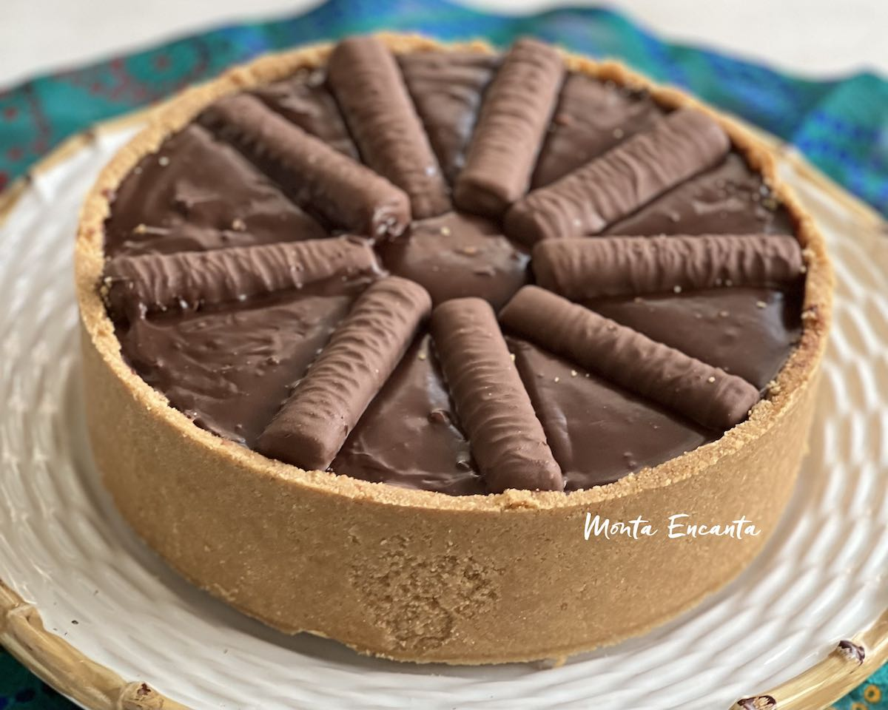

Receitas Doces
Torta Twix
(Rende 5 porções) Ingredientes:
Base da torta:
Caramelo:
Ganache de chocolate:
Modo de preparo:
1. Triture o biscoito de maisena.2. Acrescente a manteiga derretida e misture bem.
3. Coloque a mistura em uma fôrma de fundo removível, compactando bem.
4. Derreta o açúcar em fogo baixo até caramelizar.
5. Acrescente o leite condensado e misture até homogeneizar.
6. Adicione o creme de leite, misture e cozinhe até atingir a textura desejada.
7. Despeje o caramelo sobre a base e leve à geladeira por 10 minutos.
8. Derreta os chocolates no micro-ondas e misture o creme de leite para formar a ganache.
9. Cubra a torta com a ganache e sirva.